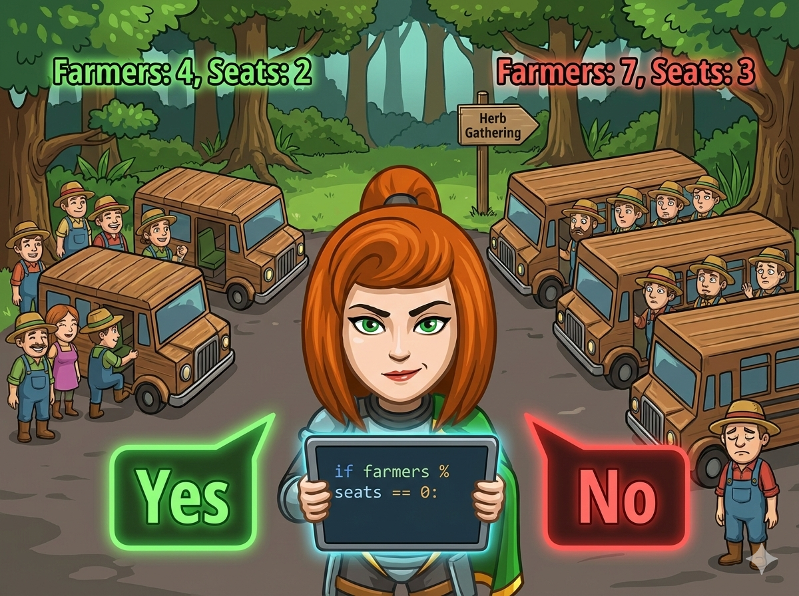

森林入口处非常热闹，农民伯伯们准备坐大巴车去采药 🌿。 但是，大巴车司机有一个非常严格的要求：
“车上绝对不能有空座位！必须刚刚好坐满！”
如果农民的人数，刚好是大巴车座位的倍数（也就是能被整除），就可以出发。 否则，大家就得重新分组啦。
👉 任务： 读入 农民人数 (a) 和 车座位数 (b)，判断 b 是不是 a 的约数。 如果是，输出 Yes；否则输出 No。
判断“能不能坐满”、“是不是约数”、“能不能整除”，其实都是一回事！
只要用到我们的老朋友 —— 取余运算 (%)。
如果 a % b == 0
说明 a 除以 b 没有余数，
也就是 b 是 a 的约数。
司机正在等你的回复，快写代码进行调度吧！
#include <iostream> using namespace std; int main() { // 1️⃣ 声明变量：a是人数，b是座位数 int a, b; // 2️⃣ 输入两个整数 cin >> a >> b; // 3️⃣ 判断 a 能否被 b 整除 // 如果余数是 0，说明刚好坐满 if (a % b == 0) { cout << "Yes"; } else { // 否则有余数，说明坐不满或有多余 cout << "No"; } return 0; }
# 1️⃣ 输入：读取人数 a 和 座位数 b a, b = map(int, input().split()) # 2️⃣ 判断整除 # 如果 a 除以 b 的余数是 0 if a % b == 0: print("Yes") # 可以出发 else: print("No") # 不能出发
⭐ 小贴士： 这里的 b 是 a 的“约数”，也可以说 a 是 b 的“倍数”。